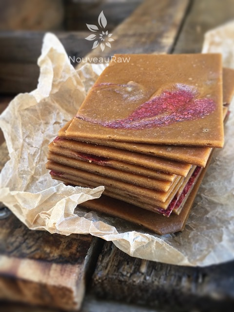

Peanut Butter Banana & Jelly Fruit Leather

~ raw, gluten-free ~
I grew up loving peanut butter and jelly sandwiches like most kids in my day. It’s an all-American flavor profile so I thought I would bring those memories back but in a much healthier way.
This fruit leather came out great, the banana is sweet and strong as you first bite into it and then the peanut butter lingers on your palate well after you have swallowed. I tend to make my leathers more on the thick side, and I made no exception with this one.
Great texture, great flavor… what can I say, it’s great. :) If you have a peanut allergy you could use any other nut butter as a substitute. I mailed my mom a variety of fruit leathers to try, and she said that this was one of her favorites.
Ingredients:
2 1/2 cups puree (made 10 gift pkgs)
- 3 large bananas, ripe
- 1/2 cup fresh ground peanut butter
- 2 Tbsp raw honey
- 1/2 tsp ground Ceylon cinnamon
- 1/8 tsp Himalayan pink salt
- 1 cup fresh strawberries (blended with a touch of sweetener) See #3
Preparation:
- Select RIPE or slightly overripe bananas that have reached a peak in color, texture, and flavor. (use bananas with brown speckled peels)
- Puree the bananas, peanut butter, honey, cinnamon, and salt, in the blender or food processor until smooth.
- Taste and sweeten more if needed. Keep in mind that flavors will intensify as they dehydrate.
- When adding a sweetener do so add a little at a time, and reblend, tasting until it is at the desired taste.
- It is best to use a liquid type sweetener. Don’t use a granulated sugar because it tends to change the texture.
- Spread the fruit puree on teflex sheets that come with your dehydrator. Pour the puree to create an even depth of 1/8 to 1/4 inch. If you don’t have teflex sheets for the trays, you can line your trays with plastic wrap or parchment paper. Do not use wax paper or aluminum foil.
- Lightly coat the food dehydrator plastic sheets or wrap with a cooking spray, I use coconut oil that comes in a spray.
- When spreading the puree on the liner, allow about an inch of space between the mixture and the outside edge. The fruit leather mixture will spread out as it dries, so it needs a little room to allow for this expansion.
- Be sure to spread the puree evenly on your drying tray. When spreading the puree mixture, try tilting and shaking the tray to help it distribute more evenly. Also, it is a good idea to rotate your trays throughout the drying period. This will help assure that the leathers dry evenly.
- For the strawberry swirl, I just pureed strawberries and a little sweetener. I then placed the puree in a squeeze bottle and piped out straight lines, as shown in the photo. I then drug a toothpick through the lines to add the design
- Dehydrate the fruit leather at 145 degrees (F) for 1 hour, reduce temp to 115 degrees (F) and continue drying for about 4 hours. Finished consistency should be pliable and easy to roll.
- Check for dark spots on top of the fruit leather. If dark spots can be seen it is a sign that it is not completely dry.
- Press down on the fruit leather with a finger. If no indentation is visible or if it is no longer tacky to the touch, the fruit leather is dry and can be removed from the dehydrator.
- Peel the leather from the dehydrator trays or parchment paper. If it peels away easily and holds its shape after peeling, it is dry. If it is still sticking or loses its shape after peeling, it needs further drying.
- Under-dried fruit leather will not keep; it will mold. Over-dried fruit leather will become hard and crack, although it will still be edible and will keep for a long time
- Storage: to store the finished fruit leather…
- Allow the leather to cool before wrapping up to avoid moisture from forming, thus giving it a breeding ground for molds.
- Roll them up and wrap tightly with plastic wrap.
- Place in an air-tight container, and store in a dry, dark place. (Light will cause the fruit leather to discolor.)
- The fruit leather will keep at room temperature for one month, or in a freezer for up to one year.

© AmieSue.com